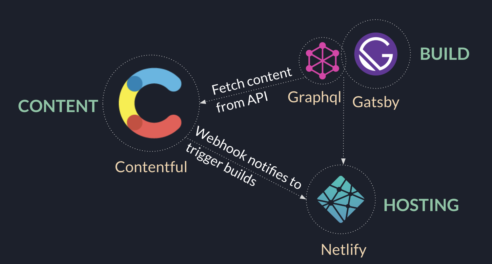

JAMStack / JavaScript, APIs, and Markup
Developers are making tons of decision while developing the applications. Selecting the web stack according to your application needs is one of critical decisions. While some developers stick with traditional web stacks, some of them exploring the new ways to make future application efficent, fast and cost effective.
Fast
JAMstack sites are super fast because the HTML is already generated during deploy time and just served via CDN without any interference or backend delays.
Highly Secured
Everything works via an API and hence there are no database or security breaches.ith server-side processes abstracted into micro service APIs, surface areas for attacks are reduced and so your site becomes highly secured.
Cheaper & Easier Scalability
JAMstack sites only contain just a few files with minimal sizes that can be served anywhere. Scaling is a matter of serving those files somewhere else or via CDNs.
Mern Stack / MongoDB, ExpressJS, React, Node.js

Both Client and Server-side Code in JavaScript
MERN primarily develops web applications that are based on JavaScript due to which the developer can write code for each side, such as the server and the client-side as well.
Best for High-Traffic and High-Volume Databases
MERN is a great option when dealing with large databases consisting of non-relational data.
More Details